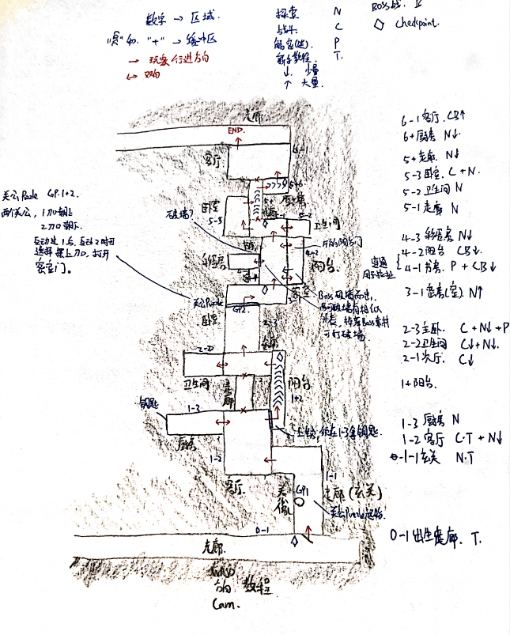
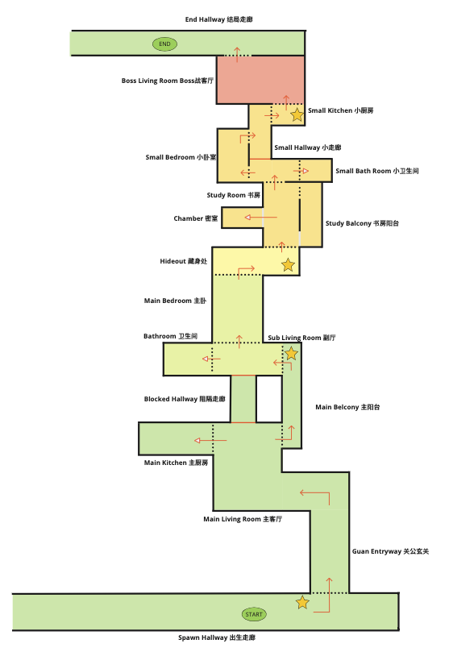
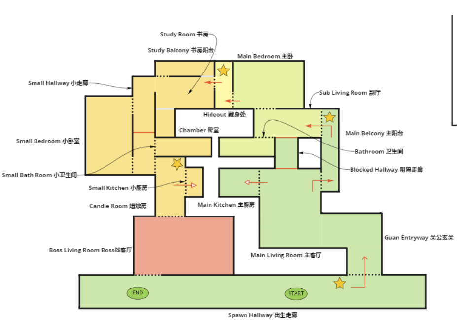
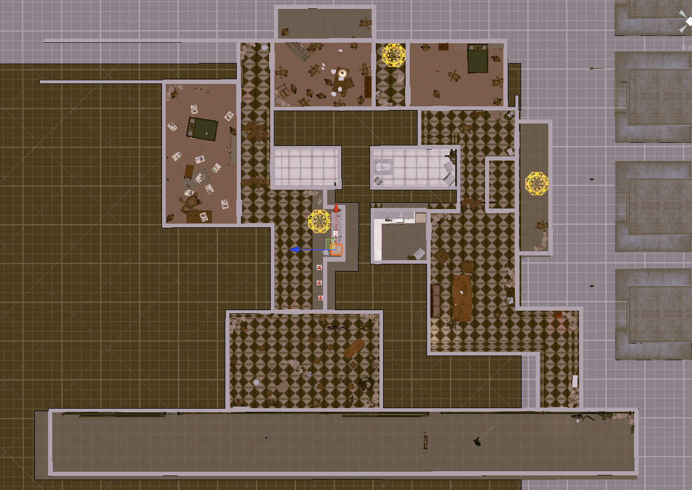

Epitaph 1997 - Level Design
Design Goals
- Puzzle and Exploration: Encourage logical thinking with intuitive navigation and clue discovery
- Combat Support: Complement spell-craft mechanics with strategic layouts
- Atmospheric Tension & Narrative Immersion: Heighten horror and suspense, reflect Taoist exorcism themes through environmental storytelling
Design Process

Started with a linear layout for straightforward player progression. Prioritized clarity over exploration depth.


Transitioned to basic circular layout. Introduced loops and connections. Improved navigation and sense of space.

Refined circular layout with logical connections. Created distinct zones for puzzles, combat, exploration. Added multiple pathways for player freedom. Incorporated environmental storytelling, puzzles, checkpoints, intuitive lighting.